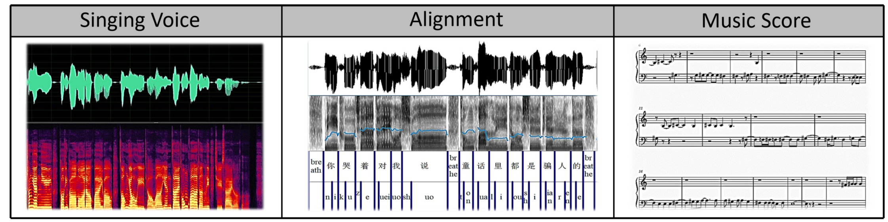
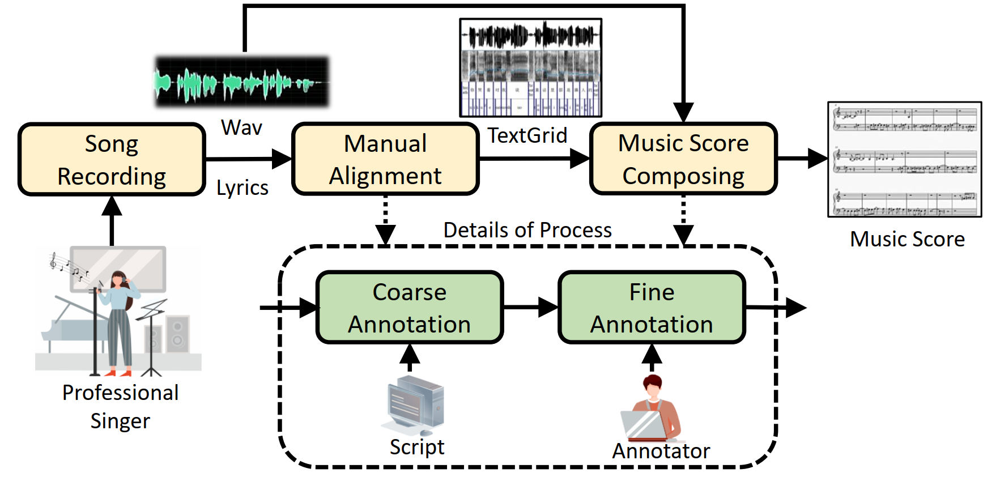

M4Singer: a Multi-Style, Multi-Singer and Musical Score Provided Mandarin Singing Corpus
Paper: https://openreview.net/pdf?id=qiDmAaG6mP
Code & Data: https://github.com/M4Singer/M4Singer
Interactive Demo: https://huggingface.co/spaces/zlc99/M4Singer
What is M4Singer?
M4Singer is a large collection of multi-style singing voice recordings and their elaborately labelled alignment and musical score information, which aims to support SVS related studies.
Samples
| Singer ID | Singing fragment 1 | Singing fragment 2 |
|---|---|---|
| Alto-1 | ||
| Tenor-2 | ||
| Soprano-1 |
Abstract
The lack of publicly available high-quality and accurately labeled datasets has long been a major bottleneck for singing voice synthesis (SVS). To tackle this problem, we present M4Singer, a free-to-use Multi-style, Multi-singer Mandarin singing collection with elaborately annotated Musical scores as well as its benchmarks. Specifically, 1) we construct and release a large high-quality Chinese singing voice corpus, which is recorded by 20 professional singers, covering 700 Chinese pop songs as well as all the four SATB types (i.e., soprano, alto, tenor, and bass); 2) we take extensive efforts to manually compose the musical scores for each recorded song, which is necessary to the study of the prosody modeling for SVS. 3) To facilitate the use and demonstrate the quality of M4Singer, we conduct four different benchmark experiments: score-based SVS, controllable singing voice (CSV), singing voice conversion (SVC) and automatic music transcription (AMT).
Pipeline
Benchmarks
Singing Voice Synthesis (SVS) Link
Controllable Singing Voice (CSV) Link
Singing Voice Conversion (SVC) Link
BibTeX
If you find our work useful, please cite our paper:
@inproceedings{
zhang2022msinger,
title={M4Singer: A Multi-Style, Multi-Singer and Musical Score Provided Mandarin Singing Corpus},
author={Lichao Zhang and Ruiqi Li and Shoutong Wang and Liqun Deng and Jinglin Liu and Yi Ren and Jinzheng He and Rongjie Huang and Jieming Zhu and Xiao Chen and Zhou Zhao},
booktitle={Thirty-sixth Conference on Neural Information Processing Systems Datasets and Benchmarks Track},
year={2022},
}